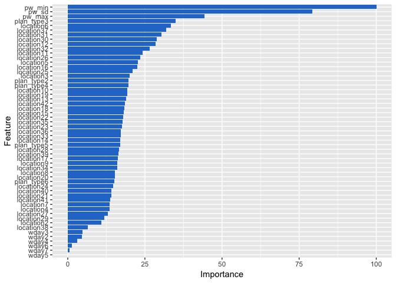

The Prediction model
This is an R program to apply Random Forest regression technique on electric power consumption prediction. Our goal is to create a model that predicts daily electric power consumption of different households based on historical electric data, location, day of week, and plan type.
- We selected the data for 86 households and 42 locations for 6 months from 2018-01-01 to 2018-06-30 and divided it into training and test sets. For each machine learning model, we trained the model with the train set for predicting power consumption and used the test set to verify the prediction model.
# Create new variable that can be used for modeling
df.elec <- df.day %>% group_by(user_id, location, wday, plan_type) %>%
dplyr::summarise(pw_mean = round(mean(power), 4),
pw_max = round(max(power), 4),
pw_min = round(min(power), 4),
pw_sd = round(sd(power), 4))
# Encoding categorical location data.
df.elec$location <- as.factor(df.elec$location)
df.elec$location = factor(df.elec$location,
levels = as.vector(unique(df.elec$location)),
labels = c(1, 2, 3,
4, 5, 6, 7 , 8 , 9, 10, 11, 12,
13, 14, 15, 16, 17, 18, 19, 20,
21, 22, 23, 24 ,25 ,26 ,27, 28,
29, 30 ,31 ,32 ,33 ,34 ,35 ,36 ,
37 ,38 ,39 ,40 ,41 ,42))
# Encoding categorical plan_type data.
df.elec$plan_type = factor(df.elec$plan_type,
levels = as.vector(unique(df.elec$plan_type)),
labels = c(1, 2 ,3 ,4 ,5 ,6))
# Encoding categorical day of week.
df.elec$wday <- as.factor(df.elec$wday)
# Selecting predictor variables.
df.elec <- df.elec[,c("location", "wday", "plan_type", "pw_max", "pw_min", "pw_sd", "pw_mean")]
# Removing all the zeros.
df.elec<-df.elec[!(df.elec$pw_mean <1),]
# Splitting the dataset into the Training set and Test set.
# Splitting the dataset into the Training set and Test set.
set.seed(123)
split=0.80 # Define an 80%/20% train/test split of the dataset
trainIndex <- createDataPartition(df.elec$pw_mean, p=split, list=FALSE)
training_set <- df.elec[ trainIndex,]
test_set <- df.elec[-trainIndex,]- Our response variable will continue to be mean of Electric but now we included location, wday, plan_type, max, min and sd of electric power consumption as our list of predictor variables.
Build Random Forest Regression
In this section, we’ll train a Random Forest Regression model for predicting households daily electric power consumption based on historical electric data, location, day of week, and plan type. Unlike linear models, random forests are able to capture non-linear interaction between the features and the target. Therefore, we will try to switch to a random forest model, and check which is better suited for our scenario.
In below result we will define the training control, we use repeatedcv method to divide our dataset into 10 folds cross-validation and repeat only 3 repeat times in order to slows down our process.
# Define the training control
fitControl <- trainControl(
method='repeatedcv', #repeat k-fold cross validation
number=10, # number of folds
repeats=3, # number of repeats
savePredictions = 'final', # saves predictions for optimal tuning parameter
classProbs = T # should class probabilities be returned
) In random forest model, we cannot pre-understand our result because our model are randomly processing. When tuning an algorithm, it is important to have a good understanding of our algorithm so that we know what affect the parameters have on the model we are creating. In this case study, we will stick to tuning two parameters, namely the mtry and the ntree parameters that have the following affect on our random forest model.
- mtry: The number of features to use to build each tree. By default, we know that the random forest will use sqrt(16), or four features per tree.
- ntree: This is the total number of trees in your final ensemble model.
# Train the model using rf
set.seed(100)
model_rf <- train(pw_mean ~ .,
data = training_set,
method = "rf",
tuneLength = 10,
trControl = fitControl,
importance = TRUE)
save(model_rf, file = "model_rf.Rdata") # Save modelModel summary
load("model_rf.Rdata")
model_rf## Random Forest
##
## 465 samples
## 6 predictor
##
## No pre-processing
## Resampling: Cross-Validated (10 fold, repeated 3 times)
## Summary of sample sizes: 419, 418, 419, 417, 419, 418, ...
## Resampling results across tuning parameters:
##
## mtry RMSE Rsquared MAE
## 2 102.65145 0.8786319 77.09469
## 7 47.76427 0.9462787 35.67768
## 13 41.42439 0.9536622 30.31269
## 19 40.83921 0.9540309 29.62362
## 25 40.77027 0.9537429 29.39748
## 31 40.77092 0.9535740 29.29252
## 37 40.89361 0.9530557 29.22549
## 43 41.22521 0.9523270 29.21119
## 49 41.21635 0.9525495 29.06537
## 55 41.22711 0.9525757 28.87361
##
## RMSE was used to select the optimal model using the smallest value.
## The final value used for the model was mtry = 25.plot(model_rf)- We can see the smallest RMSE = 40.8% when mtry = 25.
Checking variable importance for RF
varimp <- varImp(object=model_rf)
# Plotting Varianle importance for Random Forest
ggplot(varimp) +
geom_bar(stat="identity", fill = "#2879d0")
theme(axis.text.y = element_text(size=6, hjust = 1),
axis.title=element_text(size=10),
legend.position="none")## List of 3
## $ axis.title :List of 11
## ..$ family : NULL
## ..$ face : NULL
## ..$ colour : NULL
## ..$ size : num 10
## ..$ hjust : NULL
## ..$ vjust : NULL
## ..$ angle : NULL
## ..$ lineheight : NULL
## ..$ margin : NULL
## ..$ debug : NULL
## ..$ inherit.blank: logi FALSE
## ..- attr(*, "class")= chr [1:2] "element_text" "element"
## $ axis.text.y :List of 11
## ..$ family : NULL
## ..$ face : NULL
## ..$ colour : NULL
## ..$ size : num 6
## ..$ hjust : num 1
## ..$ vjust : NULL
## ..$ angle : NULL
## ..$ lineheight : NULL
## ..$ margin : NULL
## ..$ debug : NULL
## ..$ inherit.blank: logi FALSE
## ..- attr(*, "class")= chr [1:2] "element_text" "element"
## $ legend.position: chr "none"
## - attr(*, "class")= chr [1:2] "theme" "gg"
## - attr(*, "complete")= logi FALSE
## - attr(*, "validate")= logi TRUEPredicting the Test set results
Once the model is created, it can then be used to make predictions on new examples that were not seen in training (the test data).
y_pred = predict(model_rf, newdata = test_set)Display actual and predict observations
# Actual and predict observations
actuals_preds <- data.frame(cbind(actuals=test_set$pw_mean, predicteds=y_pred))
datatable(actuals_preds, options = list(pageLength = 6))Performance comparison of machine learning approaches
Once we’ve created the different models Linear regression model , let’s compare their performance.
In the first, we will stack the models together in a list and then compare the results qualitatively using the function resamples().
load("model_lm.Rdata")
model_list <- list(lm = model_lm, rf = model_rf)
res <- resamples(model_list)
summary(res)##
## Call:
## summary.resamples(object = res)
##
## Models: lm, rf
## Number of resamples: 30
##
## MAE
## Min. 1st Qu. Median Mean 3rd Qu. Max. NA's
## lm 26.69866 32.66006 37.05178 36.64231 40.32954 44.13243 0
## rf 20.71723 27.01899 29.34603 29.39748 31.00628 37.00743 0
##
## RMSE
## Min. 1st Qu. Median Mean 3rd Qu. Max. NA's
## lm 36.64645 42.75232 49.32212 48.53071 52.58247 59.91187 0
## rf 27.51837 38.63838 41.30403 40.77027 42.87333 50.67787 0
##
## Rsquared
## Min. 1st Qu. Median Mean 3rd Qu. Max. NA's
## lm 0.8781807 0.9128342 0.9317362 0.9301044 0.9529957 0.9634689 0
## rf 0.9274068 0.9447166 0.9542325 0.9537429 0.9644253 0.9764818 0- Above you can see that the lm model has the lower RMSE and lower R-squared (it is the better of the two models).
Alternatively, we want to quantitatively test if one model is better than another.
# Compare model performances using resample()
compare_models(model_lm, model_rf)##
## One Sample t-test
##
## data: x
## t = 4.9651, df = 29, p-value = 2.795e-05
## alternative hypothesis: true mean is not equal to 0
## 95 percent confidence interval:
## 4.563746 10.957134
## sample estimates:
## mean of x
## 7.76044- In this case they are not statistically different.
Looking for other parts of this series?